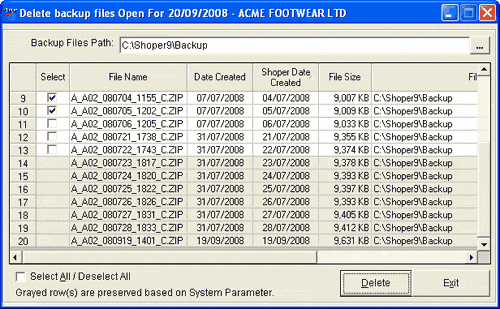

This option is used when you need to delete the backup files. These files where saved in the backup folder during the Backup process and Close-Day process.
How to reach: Housekeeping > Delete Backup Files
The Delete Backup Files window is displayed as shown.

Note: To set the number of days the backup to be preserved, set the parameter Number of days recent backups to be preserved under the category House Keeping.
Backup Files Path: The file path where the Backup files are saved is displayed by default. If required you can click on the browse icon and select the required backup folder.
Select: Select the database which has to be deleted.
File Name: The backed up file name is displayed in this column.
Date Created: The system date on which the back up file was created is displayed in this column.
Shoper Date Created: The Shoper date on which the back up file was created is displayed in this column.
File Size: The size of the file is displayed in this column.
File Path: The file path where the Backup is saved is displayed in this column.
Select All/ Deselect All: Check to select all the displayed files.